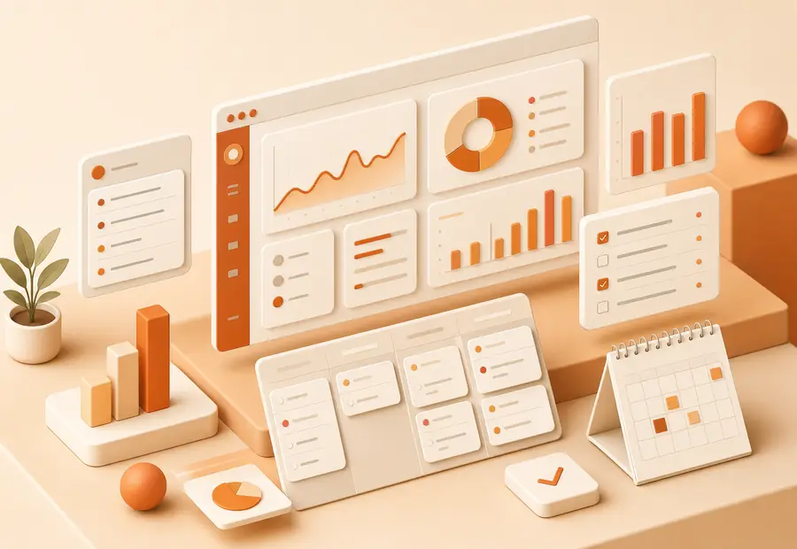

For individuals
Plan focused days without maintaining a complicated productivity system.
Ten connected tools, one shared plan. Turn any of them on or off per workspace.

A weekly report breaks down focus time, meeting load and task throughput by project, so planning next week takes minutes instead of guesswork.
Lists, boards or a calendar view — the same tasks, however you like to see them.
Book meetings around focus time automatically, never over it.
One click starts a timer that files itself under the right project.
Comment, assign and hand off work without leaving the task.
If-this-then-that rules that move tasks along without you touching them.
Weekly breakdowns of focus time, meetings and throughput, by project.
Tie daily tasks to quarterly goals so priority is never a guess.
Fast, linked notes that turn any line into a task in one keystroke.
Slack, GitHub, Figma, Zoom and more, kept in sync automatically.
Full planning power on iOS and Android, even without signal.
Plan focused days without maintaining a complicated productivity system.
Share priorities and handoffs without adding another daily meeting.
Standardize repeatable work while keeping ownership visible.
Capture incoming work, assign it, schedule it and report on it without rebuilding context at every step.
SSO, SCIM provisioning and granular workspace permissions.
Encryption in transit and at rest, with regional hosting options.
Guided onboarding and a named success partner for larger teams.
Move at your own pace or work with our onboarding team for a guided rollout.
We identify your teams, recurring processes, permissions, and reporting needs.
Import tasks, projects, users, and key history from your existing tools.
Role-based training and practical templates get each team productive quickly.
Individuals get a simple guided setup, while growing organizations can add migration, training, and governance support.
Start with a template or talk with us about a tailored rollout.